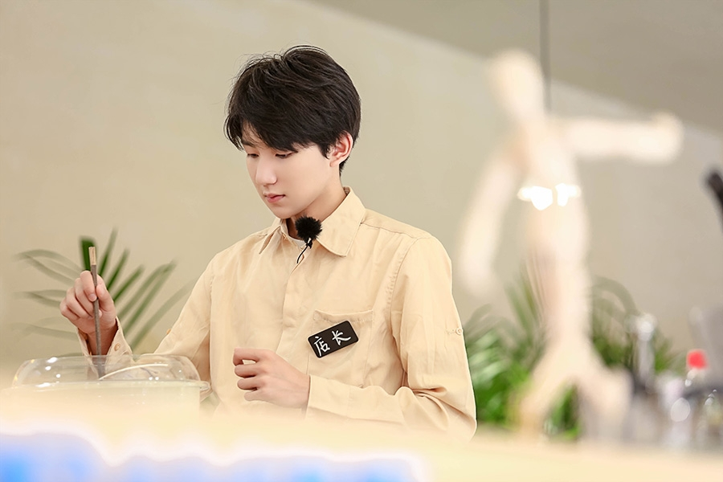

王源，2000年11月8日出生于中国重庆市，中国内地男歌手、演员、主持人、TFBOYS成员。 2011年，加入TF家族成为练习生。2013年8月6日，以TFBOYS组合出道。2014年7月，发布组合单曲《青春修炼手册》。2015年11月8日，钢琴弹唱14岁时完成的首支自己作词作曲的单曲《因为遇见你》。2016年2月，登央视春晚；3月，拍摄《时尚·COSMOPOLITAN》主刊封面，单人销量创行业纪录；6月，获第9届城市至尊音乐榜年度听众最爱新人；9月出演电视剧《青云志》；9月获新浪《微博明星白皮书》人气TOP20的明星2015、2016年第一；9月《因为遇见你》获2016亚洲新歌榜年度十大金曲；10月献唱由词谱曲的《最美的时光》；11月单曲《长大以后的世界》发布；12月担任浙江卫视《王牌对王牌第二季》常驻MC队长。2017年1月登央视春晚；。 2017年9月16日，TFBOYS组合宣布王源三人分别成立个人工作室，但组合不解散。
1月24日中午，王源在微博晒出一张联合国经社理事会青年峰会的邀请函，配文称，“感谢邀请，我会努力让全世界听到中国青年的声音，请拭目以待吧！”@tfboys组合官微也贴出了一张王源与四位青年代表的合照，向网友们宣布：“联合国#畅想2030# 小分队今日集合完毕，源哥将作为青年代表之一，代表联合国驻华系统前往纽约，参加2017经社理事会青年峰会。” 照片中，王源身穿西装，手拿蓝色文件夹与来自世界各地的四位青年代表站在一起，面带微笑地对着镜头，十分乖巧，同时又带着些“恰同学少年，风华正茂”的意气和沉着。 此前，曾有网友爆料称在大使馆偶遇前去办理签证的王源，并晒出有王源名字的联合国经社理事会2017青年峰会参与人员名单。如今网络爆料被王源亲自证实，网友们纷纷留言表白，“厉害了我的源！”“前排表白王源儿”。1月30日、1月31日王源赴美国纽约参加ECOSOC Youth Forum 2017（联合国经社理事会2017青年峰会）。
《青春旅社》中作为店长的王源换上了专业的工作服，佩戴起围裙，全身装扮十分赋有生活气息，也越来越有“店长”的样子，让前任店长赵英俊放心不少。赵英俊还在节目中直言：“我们源儿真的是出乎我意料，我没想到王源有这么多成长。” 节目中，王源在客人们面前毫无保留，竭尽全力做出自己的拿手菜，不仅有红烧鲫鱼、辣子鸡、麻婆豆腐等家常菜，还特意为小朋友学习了如何做棉花糖，也帮程晓玥一起做气泡果饮。认真工作的样子不仅得到了客人们的认可，更是被无数网友喜爱：“《青春旅社》让我们看到了最真实的源源，生活中的他原来如此贴心。” 除此之外，王源作为店长也越来越有担当，当他看到狄倩伊精心准备的早餐时会趁机鼓舞士气：“从秋老师的早餐中就可以看到她的态度，我们也要认真做，最后一定不能跨，我们要升华到最强，让人家看到我们比专业酒店还要专业。”一天的工作结束之后，他还会总结工作经验，积极鼓励大家，让每个人都感受到了满满的温暖，即使工作辛苦，也心生愉悦。可见，王源在《青春旅社》里的确成长不少。
